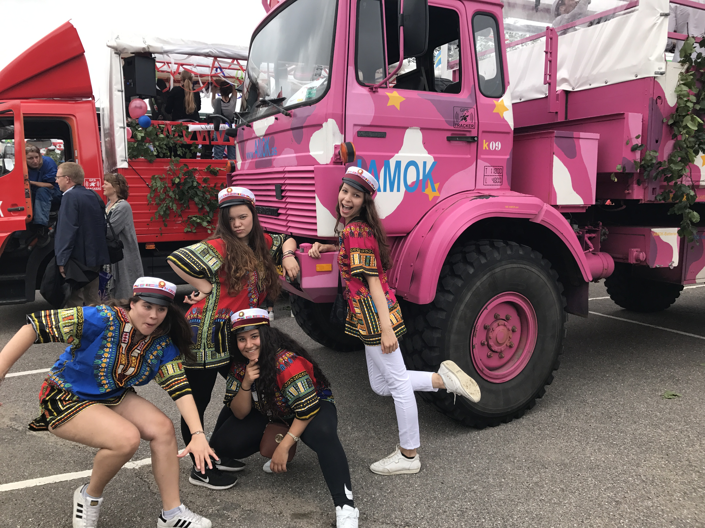
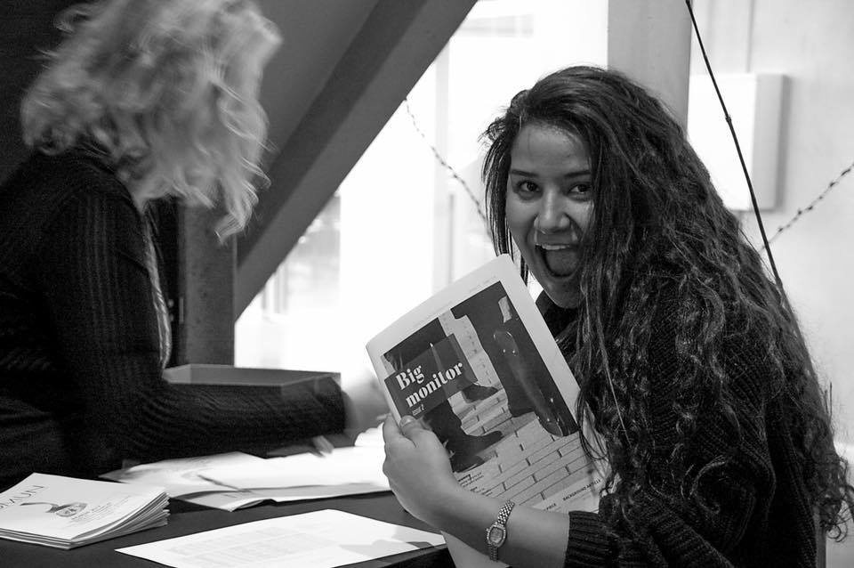
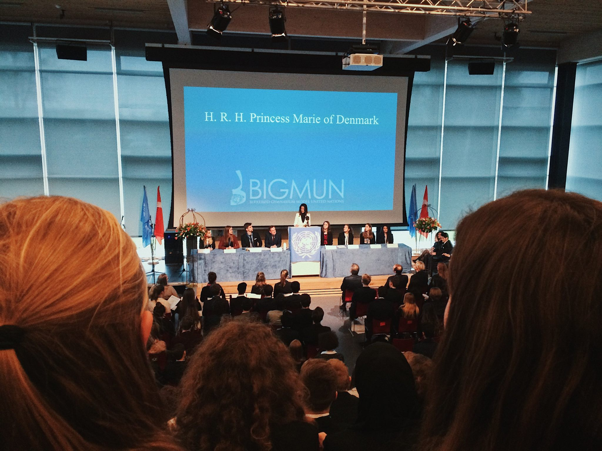
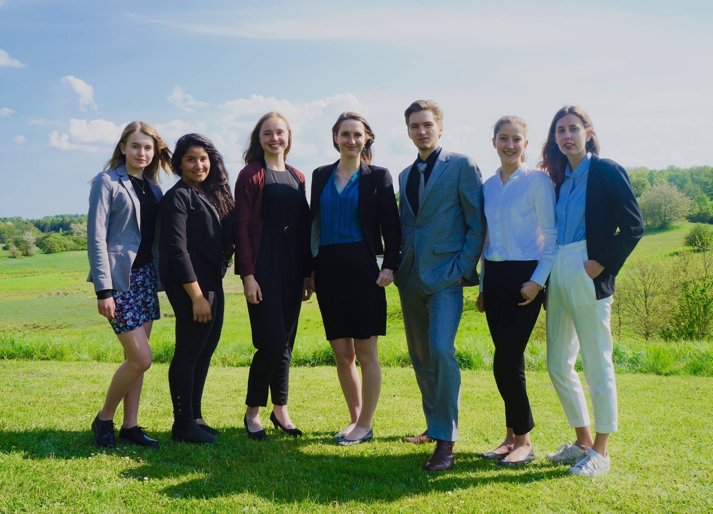
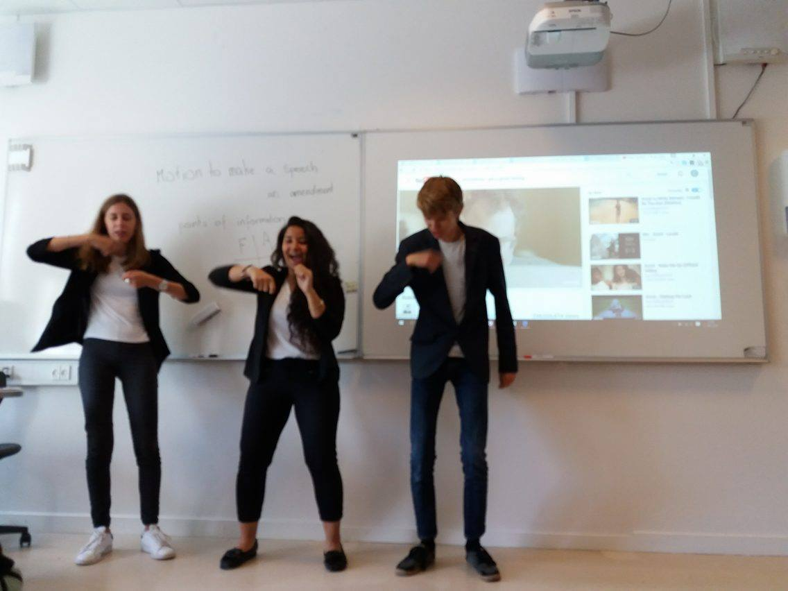
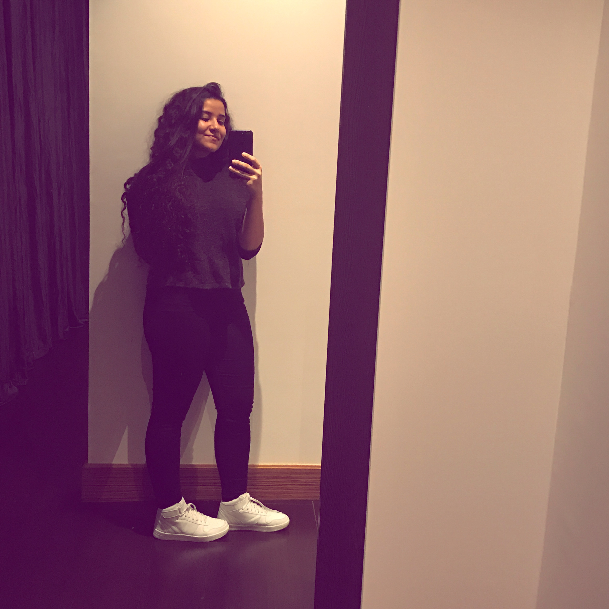
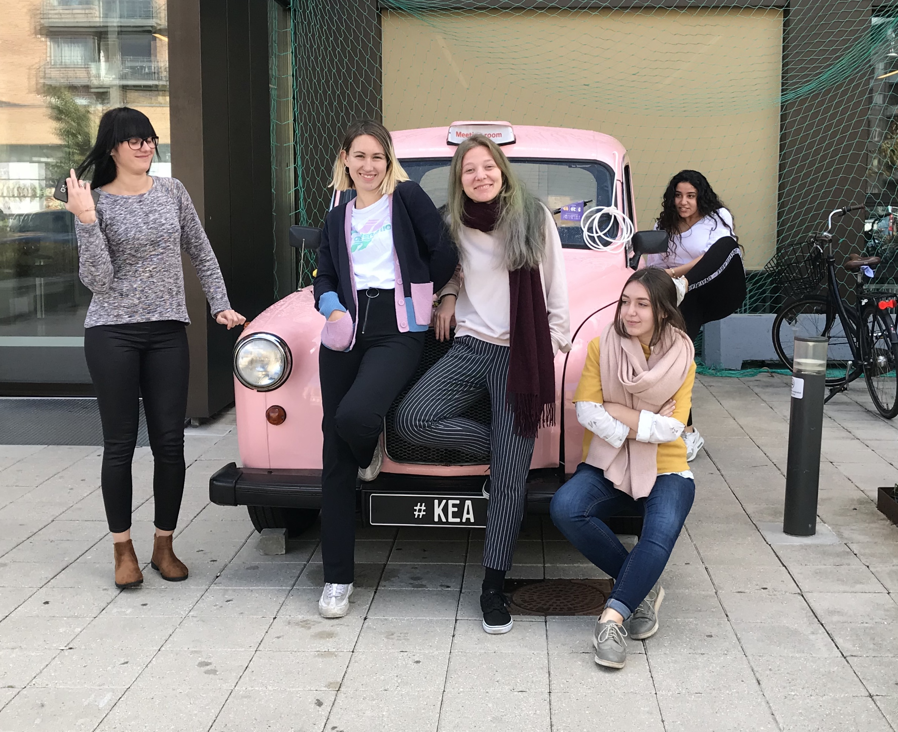
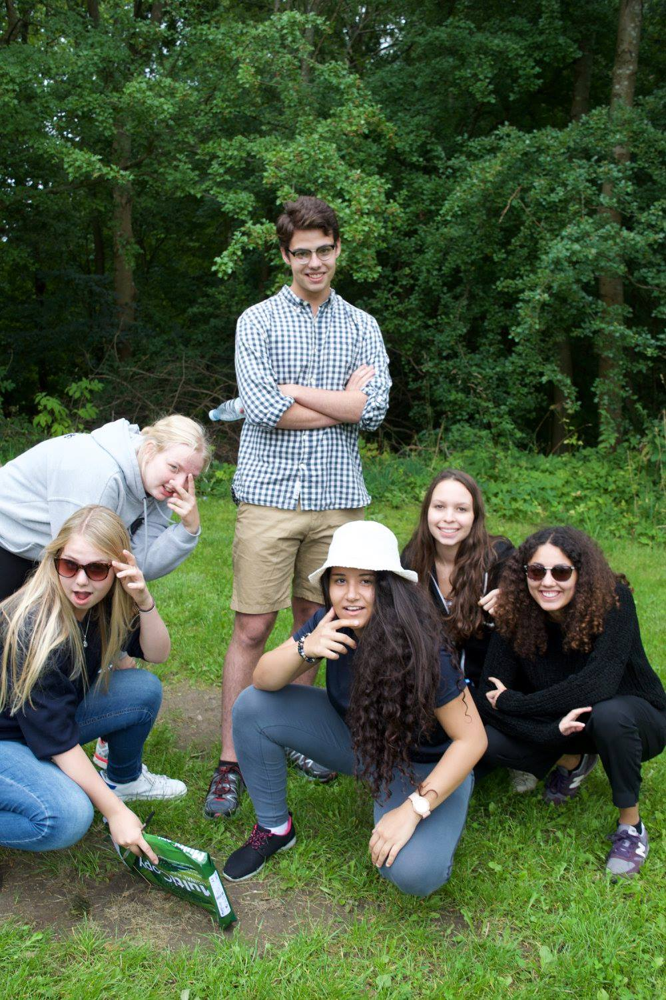
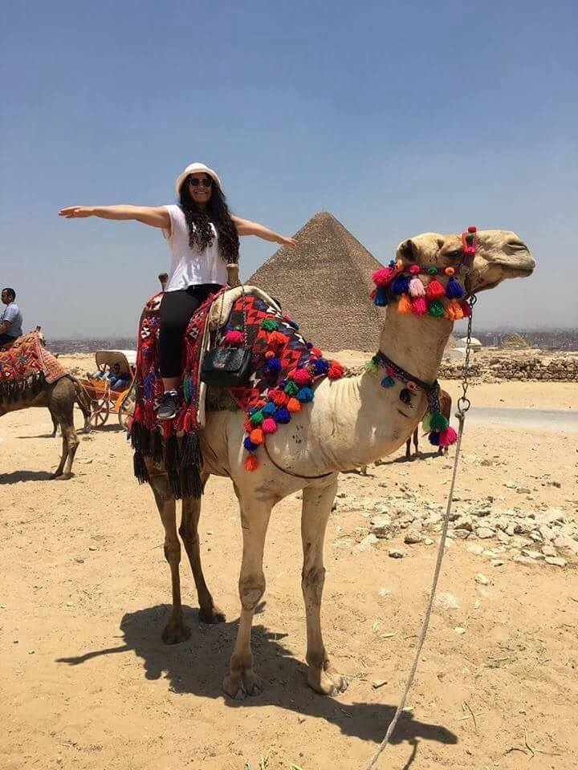
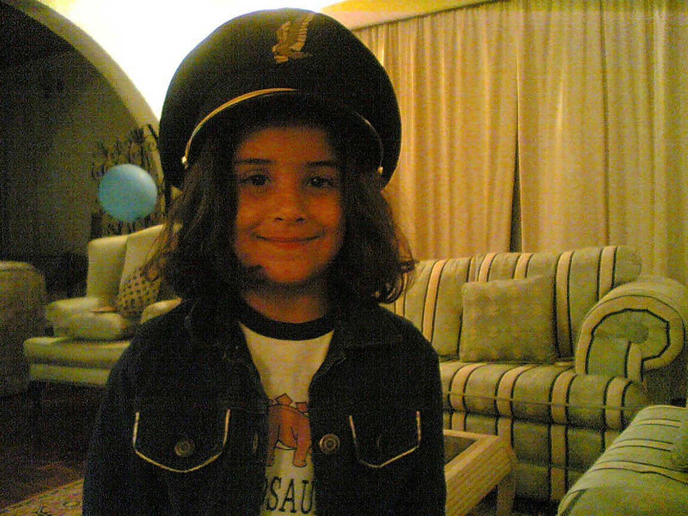

2019 - Future
I am completing my first semester at KEA. It has been such a pleasant experience and I cannot wait to embark on more journies.
Curriculum Vitae.
Track my learning.
I am completing my first semester at KEA. It has been such a pleasant experience and I cannot wait to embark on more journies.

Aarhus Univeristy - Bsc Economics and Business Administration for one year. I decided to switch courses and applied for Multimedia Design at KEA for Autumn start 2018.
Obtained International Baccalaureate (IB) Diploma. Graduated High School from Birkerød Gymnasium, HF og IB. Was a Boarding student at Birkerød Boarding School.
Obtained my GCSEs and one A-Level Arabic at St. Christopher's School Bahrain
Education at St. Christopher's School Bahrain (Year One till Year 11)
Track what I excel at.
Photoshop, XD, Premiere pro, After Effects, Illustrator, InDesign
Frome iMovie to Premiere and After Effects CC.
Social Media such as Instagram and Facebook Ads, timed posts and profile growth to take advantage of algorithims.
Word, Excel, Powerpoint, Publisher, Outlook.
Brackets, Visual Studio code. HTML, CSS, Javascript, Basic Animation.
I speak English, Arabic and Danish.
Track my practice.
2018-present. Tasks; managing social media platforms (Instagram, Facebook, Snapchat) and creating visual content; video and posts.
Created promotional videos for Belair and handled Instagram and Facebook using Ads and timed posts.
Filmmaker for events and promotions. Check out my video "The Bartender" under "Films" - created during a summer collaboration!
Bikerød Gymnasium Model United Nations. Largest MUN conference in Scandinavia. I was part of BIG 7 - the organising committee for over 400 students around the world. In 2017 we had two guest speakers; H.R.H Princess Marie of Denmark and Former Foreign Minister Martin Lidlegaard. My tasks included handling inventories and shipments, ordering supplies for the conference and ensuring well being of staff and delegates. One of the best expereinces of my life.
  Organised and placed barcodes for incoming and outgoing books for students and faculty.
Video and filmmaking freelancing for upcoming artists and companies
Track my milestones.
Figured out that Aarhus was not where I belonged and finally decided to move back to Copenhagen. I pursue my passion in filmming, and studying a course I really enjoy; MMD at KEA.
Moved to Aarhus for a year, for university.

Moved to Copenhagen. I completed my last two years of high school in boarding school and obtained the IB Diploma.
Temporarily moved to Egypt with my mum. Left home at 15.
Growing up in Saar. St. Christopher's School. Bahrain with my family.
Born in Bahrain.